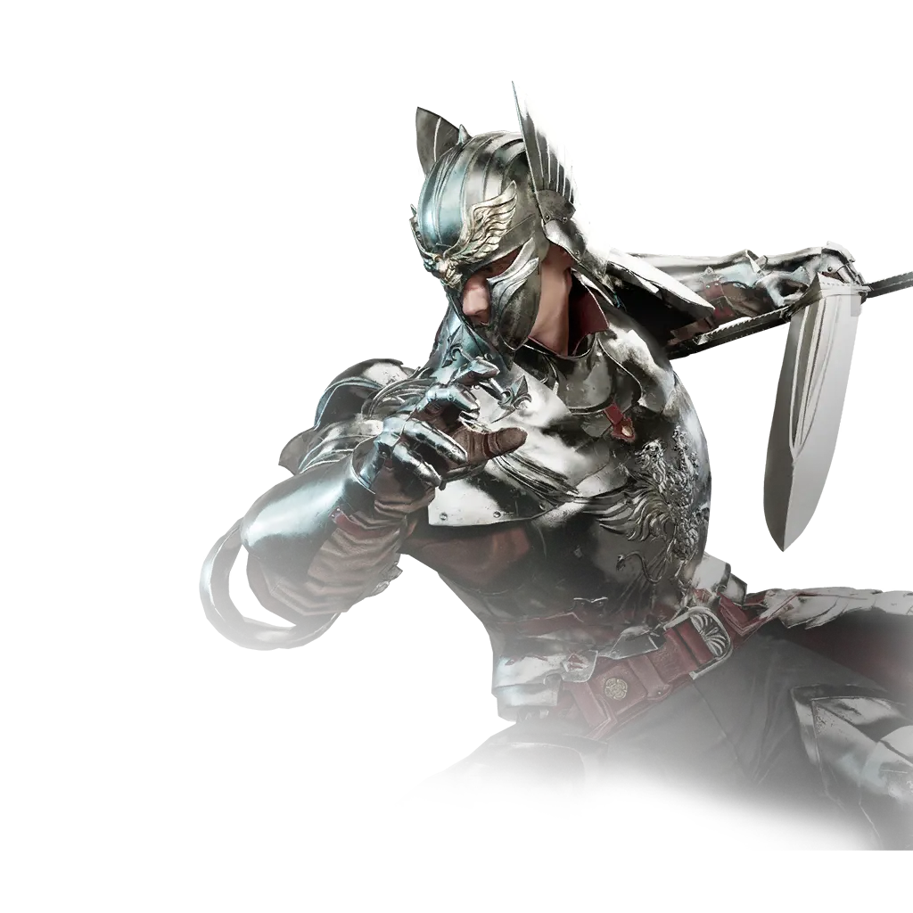

CAMINHOS DE COMBATE
Classes
Conheça a identidade de cada classe e descubra como a escolha da arma transforma seu estilo de combate.

Protótipo em desenvolvimento. As imagens centrais de armas serão conectadas às artes dos personagens equipados quando os arquivos estiverem prontos. Informações ainda não validadas aparecem identificadas como pendentes; nenhum atributo técnico do catálogo de equipamentos é reproduzido aqui.